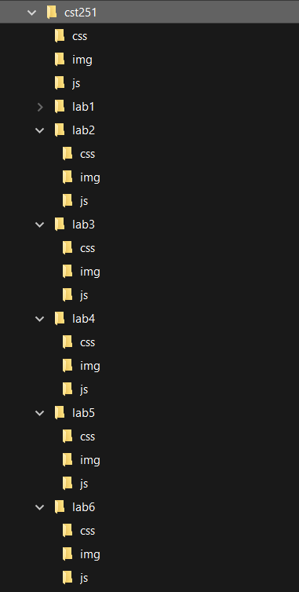
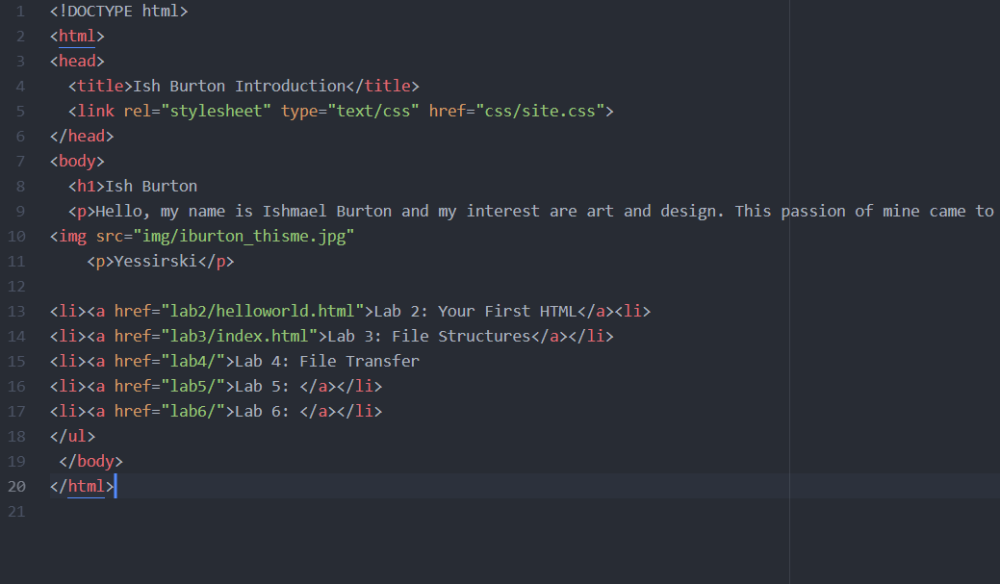

The idea of this lab was to futher create a local file structure on my computer and index.html.
I didnt encounter any large problems with creating the file structures becasue they were already done from the template that was given to us. Making file structures is not hard at all. They are essential for keeping all of your work organized.
Here are my file structures.
 This is the screenshot of my index page.

This is the source code for the page above.